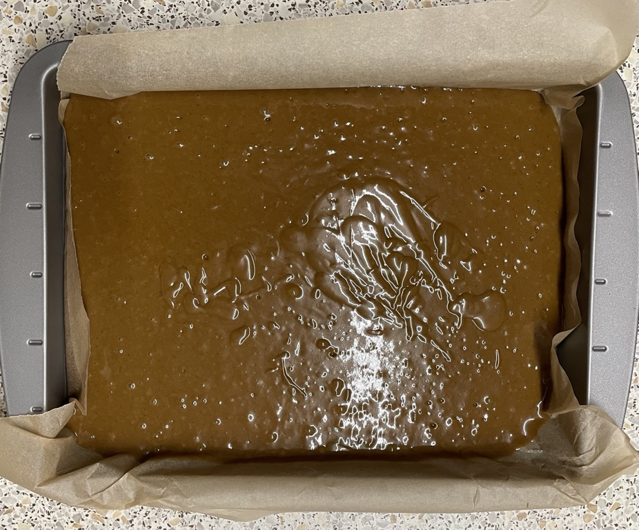
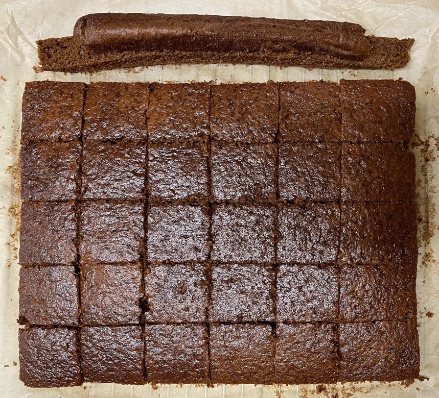

Gingerbread
- Preheat oven to 160°C
- Melt in saucepan and set aside to cool
- 100g unsalted butter cut into cubes
- 100g black treacle
- 100g golden syrup
- 100g light muscavado sugar
- Mix in bowl
- 225g self-raising flour
- 2 tbsp ginger
- 1 tsp bicarbonate of soda
- 1 tsp mixed spice
- Pour in butter mixture and beat with wooden spoon
- Add and beat in
- Add and whisk until smooth and bubbly
- 275ml (290g) full-fat milk
- Pour into 20x30cm baking tin lined with baking paper
- Bake at 160°C for 35 mins until dark and golden
- Leave to cool for 10 mins
- Remove from tin and allow to finish cooling on wire rack
- Trim edges then cut into squares
Lime icing
- Mix
- 2 tbsp icing sugar
- lime juice added gradully
- zest 1 lime
- Top squares with icing and crystallised ginger
Serving
Notes
Pics

